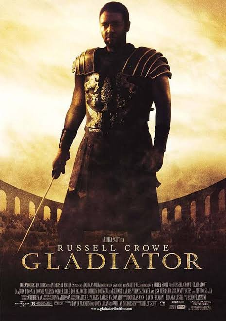
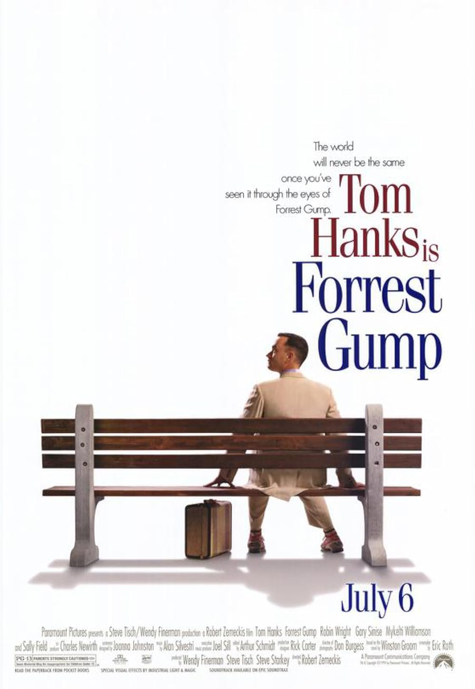
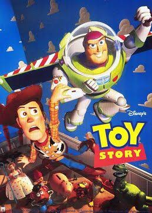

Interstellar

Una obra maestra de la ciencia ficción dirigida por Christopher Nolan. Destaca por su historia, efectos visuales, banda sonora y el uso de conceptos científicos reales.
En esta sección encontrarás un breve análisis de algunas de las películas más reconocidas de los últimos años.
Una obra maestra de la ciencia ficción dirigida por Christopher Nolan. Destaca por su historia, efectos visuales, banda sonora y el uso de conceptos científicos reales.

Un clásico del cine histórico que combina acción, drama y una gran interpretación de Russell Crowe, convirtiéndose en una de las películas más recordadas del género.

Una película emotiva que demuestra cómo la perseverancia, humildad y bondad pueden cambiar la vida de una persona.

La primera película completamente realizada con animación por computadora. Revolucionó el cine de animación y marcó el inicio de una de las sagas más queridas de Pixar.
| Película | Año | Duración | Calificación |
|---|---|---|---|
| Interstellar | 2014 | 169 min | 9.5 |
| Gladiator | 2000 | 155 min | 9.2 |
| Forrest Gump | 1994 | 142 min | 9.0 |
| Toy Story | 1995 | 81 min | 8.8 |